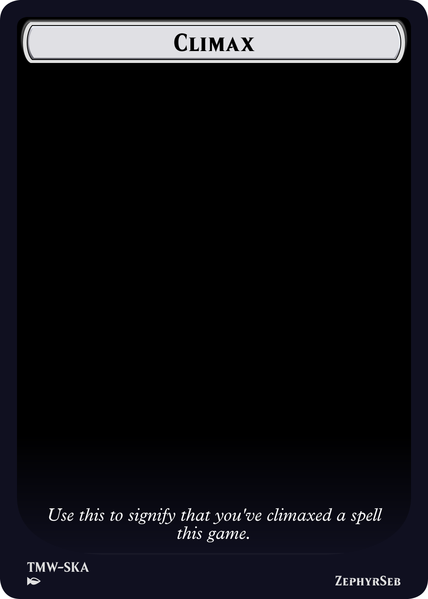
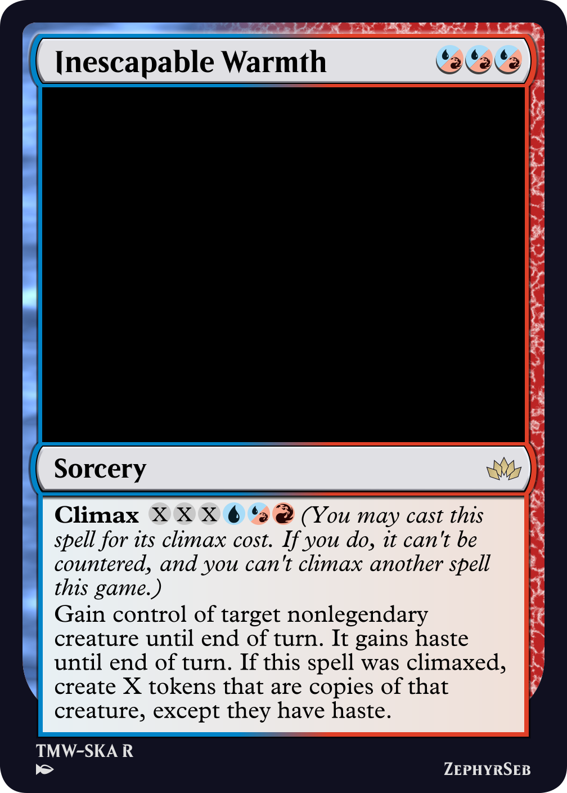
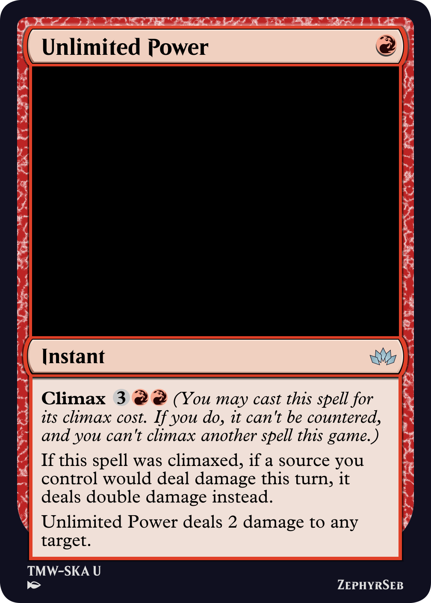

In Saviors of Kamigawa, a mechanic called Epic was introduced. The idea of epic was the power of casting a powerful and splashy spell every turn should be enough to win you the game, that the mechanic also prevents you from casting any more spells.

Endless Swarm
At time of writing, epic has a storm scale rating of 9. It turns out, not being able to interact with the game any more isn't very fun. In addition, the epic spells, which are already very expensive, could take a number of turns to close the game out, so the opponent would be able to rush you down without concern that you might interact with them. The mechanic is widely considered one of the worst mechanics in Magic history, but there are some interesting design takeaways. Limiting a mechanic to being only usable once per game is an interesting design space, but preventing your player from doing anything afterwards is too big of a drawback. What if we had the once per game limit, but it only limited the player from using that mechanic again, rather than a major game action such as casting spells?

Climax
In Shinkara I introduced the Climax mechanic to represent the moment our superheroes have reached the limits of their power and pull off their ultimate move.
Climax is an alternate casting cost that can appear on instants and sorceries. Normally, these instants and sorceries act like normal spells, but, once per game, you can cast a spell for its climax cost to get a big effect. In addition, the spell can't be countered. But once you've done this, you can't climax any more spells. You can still cast the spells as normal, however.

Stellar Retribution
Like many mechanics in Magic, this is a variant of kicker - you can pay more mana to get a larger effect from the card. But only once per game. Thanks to this restriction, many effects can be made to take advantage of this:
• A stronger 'kicker' effect of the card, which can be made quite splashy.
• Efficient or synergystic effects that grant the player some kind of advantage in the midgame.
• Cards can simply be made cheaper by casting them for the climax cost, allowing a player to get ahead early in the game.
• Problematic effects can be included without allowing players to recur the effects.
Climax certainly has more design space than I explored in Shinkara. For example, cards with off-color climax costs could allow for stronger effects that would only be seen in that color.

Inescapable Warmth
The largest benefit climax has is that it is an anti-parasitic mechanic. That is to say, the more cards with climax you put in your deck, the worse it becomes - once you've used the effect, all remaining climax cards reduce to their base level, which may not be as strong as another card with the same effect.
As an alternate casting cost, it also becomes very difficult to cheat climax cards out - you can't climax a card if you cast it without paying its mana cost, and you can't recast a climax card from another zone once you've done so, simply as the rule doesn't allow it. This allows for strong mechanics or even potentially problematic mechanics to be printed more safely, as it's much more difficult for players to abuse. For example, if a climax card allows you to take an extra turn, that effect can't be repeated by getting the card back out of the graveyard.
The mechanic has two main downsides:
• The mechanic can only be used once per game. While it seems weird to list the mechanics main gimmick as a downside, some players simply don't like not being able to combo off with their cards, and if an effect like climax stops this, they're less likely to interact with it.
• The mechanic has a tracking issue. Once you've cast a spell with climax, you need to remember that you've done so for the rest of the game so you don't try to again. This is fairly easily mitigated using a marker or a note, though it limits the amount of 'once per game' mechanics you'd want to print, as if each needs a marker it can quickly become confusing.
In conclusion, the mechanic has promise, and the design space (as a variant of kicker) is wide. I suspect that it's a mechanic that will find a home both in sets that want to use it for its flavor, and as a use to create designs that could get out of hand and cause unwanted friction in the game if left unthrottled.

Unlimited Power
That's all from me today, may you find the right time for you to use your ultimate.
ZephyrSeb